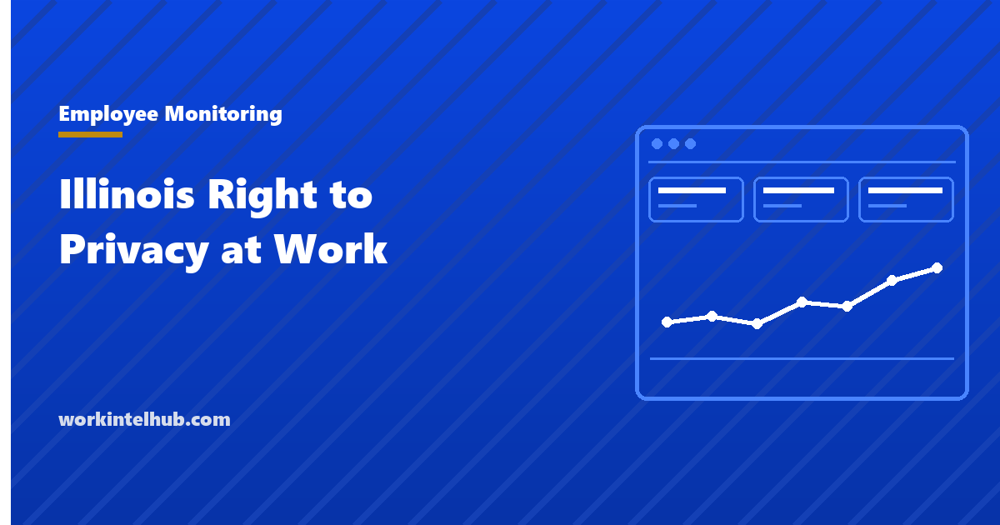

Illinois Right to Privacy in the Workplace Act

The Illinois Right to Privacy in the Workplace Act, 820 ILCS 55, is narrower than its name suggests and broader than most employers realise. It does not restrict monitoring of company equipment. What it does restrict is what an employer may hold against you for your own time, and what it may demand access to.
It is also not the Illinois statute most likely to cost you money. That is the Biometric Information Privacy Act, which is covered below because any Illinois employer reading about workplace privacy needs both.
The lawful products provision
820 ILCS 55/5 makes it unlawful for an employer to refuse to hire or to discharge an individual because that individual uses lawful products off the employer's premises during non-working and non-call hours. Lawful products means products that are legal under state law.
The phrase that matters is "legal under state law". Illinois legalised recreational cannabis, so cannabis is a lawful product in Illinois, and the Act reaches it. The statute cross references section 10-50 of the Cannabis Regulation and Tax Act, which preserves employers' ability to maintain reasonable workplace drug policies, so this is not a right to be impaired at work. It is a restriction on acting against someone for lawful off-duty use.
The exceptions are specific rather than general:
- Non-profit organisations whose primary purpose is discouraging use of a particular lawful product.
- Products that impair the employee's ability to perform assigned duties.
- Insurance policies with differential rates, where the differential cost is documented and disclosed to employees.
- The cannabis provisions referenced above.
The second exception is where the analysis usually lands, and it is about performance rather than about the product. Impairment at work is actionable. Lawful use on Saturday, absent impairment on Monday, is not.
Personal online accounts
820 ILCS 55/10 covers social media and any other account used primarily for personal purposes. It excludes accounts created for the employer's business purposes, which is the line that decides most real questions.
An employer may not request or require a username, password or other account information for a personal online account. It may not require an employee to authenticate or access such an account in the employer's presence, nor require them to invite the employer to join a group affiliated with the account. It may not penalise anyone for refusing, or for complaining about a violation, and it may not decline to hire an applicant on that basis.
What remains permitted is substantial, and this is the part employers most often misread in the cautious direction:
- Maintaining lawful workplace policies governing use of the employer's electronic equipment, including internet, social networking and email use.
- Monitoring usage of the employer's electronic equipment and the employer's email, without requesting any password or account information for a personal account.
- Using information in the public domain.
So the Act does not prevent an Illinois employer from monitoring the company laptop, and it does not prevent reading a public post. It prevents compelled access to a private account. Our page on what you can lawfully do with a public post covers what to do with that permission, which is a different question from whether you have it.
The rest of the Act
Two further provisions that catch employers who only read the social media part.
Workers' compensation history. The Act prohibits asking prospective employees about past workers' compensation claims or benefits. This is an interview and application form problem more than a policy one, and it is the kind of question that survives in an old template nobody has reviewed.
E-Verify and no-match letters. The Illinois Department of Labor notes that employers may not take action solely on receipt of a no-match letter from the Social Security Administration or the IRS regarding a discrepancy in employee identification, and must give notice to the affected employee.
On enforcement, the Department states that aggrieved parties do not need to file a complaint with it, or otherwise exhaust administrative remedies, before filing a lawsuit. That is worth knowing: there is no administrative gate to pass through first, so the practical exposure is a direct claim.
What the Act does not do
Illinois has no dedicated electronic monitoring notice statute of the kind Connecticut, Delaware and New York have. There is no Illinois requirement to give written notice before monitoring a company device, and no acknowledgement to collect.
That is a description of the statute, not a recommendation. Notice remains the difference between a policy people accept and one they discover, and it costs nothing. Our guide to monitoring laws by state covers where notice is mandatory, and the policy template has wording that works whether or not your state requires it.
The Illinois eavesdropping statute is a separate matter and applies to recording conversations rather than to screen or activity monitoring. If you are considering recording audio, that is the provision to take advice on, and it is not covered by 820 ILCS 55.
BIPA is the bigger Illinois risk
The Biometric Information Privacy Act, 740 ILCS 14, is why Illinois has an outsized reputation in workplace privacy. It requires a private entity to give written notice and obtain a written release before collecting a biometric identifier, and it carries a private right of action, which is unusual and is the whole story.
For employers the collision point is mundane: fingerprint and hand-geometry time clocks. A device installed to stop buddy punching collects a biometric identifier from every employee, every shift, and if the notice and written release were not obtained first, each of those employees has a claim.
The exposure changed twice recently, in opposite directions. In Cothron v. White Castle the Illinois Supreme Court held that a claim accrues on each scan, which produced per-scan damages theories with arithmetic that ran to enormous numbers. Illinois then amended BIPA through Senate Bill 2979, effective 2 August 2024, so that collecting the same biometric identifier from the same person by the same method is a single violation for which the person is entitled to at most one recovery.
In May 2026 the Seventh Circuit held that the amendment applies retroactively to cases pending when it was enacted, treating the change as procedural. That materially reduces historic exposure, and it does not change the underlying duty at all. Notice and written release before collection remain required, and a time clock installed without them is still a violation, just a less arithmetically alarming one.
The practical instruction for anyone choosing a time clock in Illinois: if it reads a fingerprint, a hand, a face or an iris, BIPA applies before the device is switched on, not after. Our timesheet guidance covers the non-biometric alternatives, which for most employers are sufficient.
Badge and access systems are where BIPA most often catches employers by surprise, because a proximity card is not a biometric but the fingerprint reader added later is. Our page on RFID employee tracking covers that distinction.
What an Illinois employer should actually do
- Remove any question about prior workers' compensation claims from application forms and interview guides.
- Confirm no manager asks for social media passwords or asks anyone to open an account in their presence, including informally during interviews.
- Write a policy covering use of company equipment, which the Act expressly permits, and say in it what is monitored.
- Check whether any time clock or access control device collects a biometric identifier. If so, confirm written notice and written release exist for every person, dated before collection began.
- Separate off-duty conduct from performance in any disciplinary process, and document the performance basis where impairment is alleged.
- Give monitoring notice anyway, even though Illinois does not require it.
Item four is the one to do this week if you have not. It is the only item on the list with a private right of action attached.
Illinois also regulates AI in employment separately: HB 3773 amended the Human Rights Act from 1 January 2026, requiring notice when AI is used in a covered employment decision. Our guide to agentic AI in HR covers that alongside the New York City rules.
Key takeaways
- 820 ILCS 55/5 makes it unlawful to refuse to hire or discharge someone for using lawful products off premises during non-working hours.
- Because cannabis is legal under Illinois law it is a lawful product, though impairment at work remains actionable.
- 820 ILCS 55/10 prohibits demanding passwords or access to personal online accounts, or requiring someone to open one in your presence.
- The Act expressly permits monitoring the employer's own equipment and email, and using public information.
- Illinois has no electronic monitoring notice statute like Connecticut, Delaware, Maine and New York.
- Aggrieved parties can sue without first filing with the Department of Labor or exhausting administrative remedies.
- BIPA is the larger risk: fingerprint time clocks require written notice and release before collection, with a private right of action.
- The 2024 BIPA amendment limits recovery to one per person per collection method, and the Seventh Circuit held in May 2026 that it applies retroactively.
Frequently asked questions
What does the Illinois Right to Privacy in the Workplace Act cover?
Three main things: it prohibits acting against employees for using lawful products off duty, prohibits demanding access to personal online accounts, and prohibits asking applicants about past workers' compensation claims. It also restricts action based solely on a no-match letter. It does not restrict monitoring of the employer's own equipment.
Can an Illinois employer ask for my social media password?
No. 820 ILCS 55/10 prohibits requesting or requiring a username, password or other account information for a personal online account, requiring you to open it in the employer's presence, or requiring you to invite the employer into a group affiliated with it. Refusing cannot lawfully be held against you.
Can Illinois employers monitor work computers?
Yes. The Act expressly preserves the right to maintain lawful policies governing use of the employer's electronic equipment and to monitor usage of that equipment and the employer's email, provided no password or account information for a personal account is requested. Illinois has no separate statute requiring advance notice of monitoring.
Can I be fired in Illinois for legal cannabis use off duty?
Not for the lawful off-duty use itself, because cannabis is legal under Illinois law and therefore a lawful product under 820 ILCS 55/5. The statute cross-references the Cannabis Regulation and Tax Act, which preserves reasonable workplace drug policies, so impairment at work remains a legitimate basis for action. The distinction is between use and impairment.
Does Illinois require notice before monitoring employees?
No. Unlike Connecticut, Delaware, Maine and New York, Illinois has no dedicated electronic monitoring notice statute. Giving notice is still worth doing, because it is the difference between a policy people accept and one they discover, and it costs nothing to provide.
What is BIPA and why does it matter to employers?
The Biometric Information Privacy Act, 740 ILCS 14, requires written notice and a written release before collecting a biometric identifier, and carries a private right of action. For employers the usual collision is fingerprint or hand-geometry time clocks, which collect an identifier from every employee every shift.
Did the 2024 BIPA amendment reduce employer exposure?
Substantially. Senate Bill 2979, effective 2 August 2024, provides that collecting the same identifier from the same person by the same method is a single violation with at most one recovery, replacing the per-scan theory that followed Cothron v. White Castle. In May 2026 the Seventh Circuit held the amendment applies retroactively to pending cases. The underlying notice and release duty is unchanged.
Do I have to file with the Illinois Department of Labor before suing?
No. The Department states that aggrieved parties do not need to file a complaint with it or otherwise exhaust administrative remedies before filing a lawsuit under the Act.